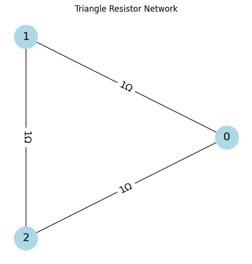
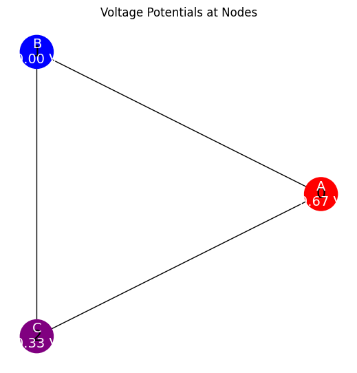

Problem 1
Problem 1
📐 Problem 1: Equivalent Resistance Using Graph Theory
🎯 Motivation
Calculating equivalent resistance is a fundamental task in electrical circuit analysis. Traditionally, this is done using series and parallel rules. However, for complex resistor networks, this becomes inefficient and error-prone.
Graph theory provides a systematic, scalable, and elegant approach to analyzing resistor networks. By modeling the circuit as a graph—where nodes represent junctions and edges represent resistors (with weights equal to resistance values)—we can apply tools from linear algebra and matrix theory to compute the equivalent resistance between any two nodes.
This approach is not only useful in theoretical physics and electrical engineering but is also essential for the development of automated circuit solvers, network optimization algorithms, and simulation software.
📘 Theoretical Background
🔗 Circuit as a Graph
- Nodes = junctions or connection points
- Edges = resistors between nodes
- Edge Weights = resistance values or conductance (\(G = \frac{1}{R}\))
The circuit is modeled as a weighted undirected graph. The electrical properties are encoded into a matrix called the Laplacian matrix, derived from Kirchhoff’s laws.
🧮 Laplacian Matrix Method
Given:
- \(R_{ij}\) = resistance between nodes \(i\) and \(j\)
- \(G_{ij} = \frac{1}{R_{ij}}\) = conductance
Step 1: Construct the Laplacian Matrix \(L\)
- \(L_{ii} = \sum_j G_{ij}\) (sum of conductances at node \(i\))
- \(L_{ij} = -G_{ij}\) (negative of conductance between \(i\) and \(j\))
Step 2: Use Node Potentials
Inject 1 A current at node \(a\), extract 1 A at node \(b\):
Set one node's potential (typically node \(b\)) to zero (ground).
Solve the reduced linear system:
Then compute the voltage difference \(V_a - V_b\).
Since current was 1 A, by Ohm’s law:
🧪 Analytical Example: Triangle Circuit
Circuit Description
Three nodes \(A\), \(B\), and \(C\), all connected with \(1\,\Omega\) resistors:
Goal: Find the equivalent resistance between A and B.
Label:
- Node A → 1
- Node B → 2
- Node C → 3
Step-by-Step Solution (No Programming)
1. Construct the Laplacian Matrix
Each node has two connections (each with conductance \(1\,\text{S}\)):
2. Define Current Injection Vector
Inject 1 A into node 1 (A), extract 1 A at node 2 (B):
3. Ground Node B (set \(V_2 = 0\))
Now reduce the system to unknown voltages \(V_1\) and \(V_3\):
4. Solve the System
From the second equation:
Substitute into the first equation:
Then:
5. Compute Equivalent Resistance
Voltage difference:
Current:
So:
✅ Final Answer


